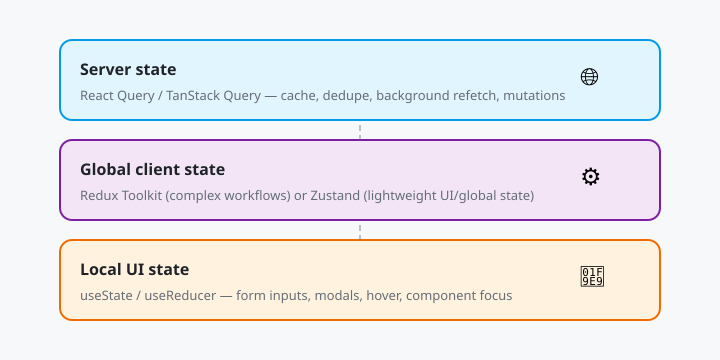
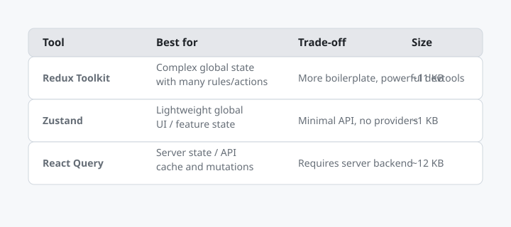

State Management: Redux, Zustand, React Query
Chapter 1
Introduction
Modern React applications split state between local UI state, shared global state, and remote server state. Picking the right tool for each layer keeps apps fast, predictable, and easy to maintain. This tutorial covers three industry-standard tools: Redux Toolkit for predictable global state, Zustand for lightweight stores, and React Query (TanStack Query) for server state.

Server state, global client state, and local UI state each have a best-fit tool.
Before you start
- Comfortable with React, hooks, and JSX.
-
Understand
useStateanduseEffect. - Basic TypeScript is helpful but not required.
What you'll learn
- ✓ When to use Redux vs Zustand vs React Query
- ✓ Slices, reducers, and actions with Redux Toolkit
- ✓ Minimal stores and selectors with Zustand
- ✓ Caching, background refetching, and mutations with React Query
- ✓ Server state vs client state separation
- ✓ Real-world architecture decisions
Real-world systems using these tools
- Redux Toolkit: used by Instagram , Airbnb , and Slack for complex, event-heavy UIs with time-travel debugging needs.
- Zustand: used by Vercel , Excalidraw , and Zed for fast, minimal stores without boilerplate.
- React Query: used by Netflix , Amazon , and Microsoft to cache API responses, dedupe requests, and keep server UI fresh.
- Combination pattern: GitHub and Stripe dashboards mix local React Query caches for server data with Zustand or Redux for UI/global state.
Chapter 2
Why State Management?
React's built-in state is perfect for small components, but as apps grow you face three problems: prop drilling, inconsistent state copies, and repeated data fetching. State management libraries solve these by centralizing rules, caching, and updates.
Three kinds of state
Local UI state
Modal open/closed, form input values, hover state. Keep it in
useState
inside the component.
Shared client state
Logged-in user, theme, cart, filters applied across routes. Use Redux Toolkit or Zustand.
Server state
Data that lives on a server: product catalog, orders, messages. Use React Query to cache, synchronize, and mutate it.
// Problem: prop drilling a user through 3 layers function App() { const [user, setUser] = useState(null); return ; } function Layout({ user, setUser } ) { return; } function Header({ user, setUser } ) { return user ? {user.name} : setUser({ name: 'Ada' } )}>Login; }
// Solution:
any component reads from a shared store function Header()
{ const user = useUserStore((state) => state.user);
const login = useUserStore((state) => state.login);
return user ? {user.name} : Login;
}Checkpoint
Identify one piece of local state, one shared state, and one server state in an app you use daily (e.g., a food delivery or banking app).
Chapter 3
Redux Toolkit
Redux Toolkit (RTK) is the official, opinionated way to write Redux. It removes boilerplate with
createSlice
, adds immutable updates via Immer, and includes RTK Query for data fetching.
When to choose Redux Toolkit
- Many components read and write the same state.
- You need time-travel debugging or action logging.
- State transitions are complex and must be predictable.
- You want a single source of truth with strict rules.
Install and configure the store
npm install @reduxjs/toolkit react-redux// src/store/index.ts
import { configureStore } from "@reduxjs/toolkit";
import cartReducer from "./cartSlice";
export const store = configureStore({ reducer: { cart: cartReducer } });
export type RootState = ReturnType;
export type AppDispatch = typeof store.dispatch;Create a slice
// src/store/cartSlice.ts
import
{ createSlice,
PayloadAction }
from '@reduxjs/toolkit';
interface CartItem
{ id: string;
name: string;
price: number;
quantity: number;
}
interface CartState
{ items: CartItem
[]
;
}
const initialState: CartState = { items: []
}
;
const cartSlice = createSlice({ name: 'cart',
initialState,
reducers: { addItem: (state,
action: PayloadAction) => { const existing = state.items.find((i) => i.id === action.payload.id);
if (existing)
{ existing.quantity += action.payload.quantity;
}
else
{ state.items.push(action.payload);
}
},
removeItem: (state,
action: PayloadAction) => { state.items = state.items.filter((i) => i.id !== action.payload);
},
clearCart: (state) => { state.items = []
;
}, }, }
);
export const
{ addItem,
removeItem,
clearCart } = cartSlice.actions;
export default cartSlice.reducer;
// Selector
export const selectCartTotal = (state: { cart: CartState }
) => state.cart.items.reduce((sum,
i) => sum + i.price * i.quantity,
0);Provide the store and dispatch actions
// src/main.tsx
import
{ Provider }
from 'react-redux';
import
{ store }
from './store';
import App from './App';
ReactDOM.createRoot(document.getElementById('root')!).render( );
// src/components/CartBadge.tsx
import
{ useSelector,
useDispatch }
from 'react-redux';
import
{ selectCartTotal,
addItem }
from '../store/cartSlice';
import type
{ RootState,
AppDispatch }
from '../store';
export function CartBadge()
{ const total = useSelector((state: RootState) => selectCartTotal(state));
const dispatch = useDispatch();
return ( dispatch(addItem({ id: 'p1',
name: 'Mug',
price: 12,
quantity: 1 }
))}> Cart: ${total.toFixed(2)}
);
}Real-world note
Slack rebuilt parts of its desktop app with Redux Toolkit to manage message drafts, channel unread states, and notification counts across thousands of components.
Chapter 4
Zustand
Zustand is a small, fast state manager for React. It uses hooks, requires almost no boilerplate, and works outside the React tree so non-React code can read or update state too.
When to choose Zustand
- You want global state without actions, reducers, or providers.
- You need a store that is readable by utility functions or event handlers.
- Bundle size matters; Zustand is ~1 KB.
- You want TypeScript support out of the box.
Install and create a store
npm install zustand// src/store/uiStore.ts
import
{ create }
from 'zustand';
interface UIState
{ sidebarOpen: boolean;
theme: 'light' | 'dark';
toggleSidebar: () => void;
setTheme: (theme: 'light' | 'dark') => void;
}
export const useUIStore = create((set) => ({ sidebarOpen: false,
theme: 'light',
toggleSidebar: () => set((state) => ({ sidebarOpen: !state.sidebarOpen }
)),
setTheme: (theme) => set({ theme }
), }
));
// Selector
example: only re-render when theme changes export const useTheme = () => useUIStore((state) => state.theme);Use the store in components
// src/components/Sidebar.tsx
import
{ useUIStore }
from '../store/uiStore';
export function Sidebar()
{ const
{ sidebarOpen,
toggleSidebar } = useUIStore();
return ( Close ... );
} // src/components/ThemeToggle.tsx
import
{ useUIStore }
from '../store/uiStore';
export function ThemeToggle()
{ const theme = useUIStore((state) => state.theme);
const setTheme = useUIStore((state) => state.setTheme);
return ( setTheme(theme === 'light' ? 'dark' : 'light')}> Switch to
{theme === 'light' ? 'dark' : 'light'}
);
}Persist Zustand to localStorage
import { persist } from "zustand/middleware";
export const useUIStore = create(
persist(
(set) => ({
sidebarOpen: false,
theme: "light",
toggleSidebar: () =>
set((state) => ({ sidebarOpen: !state.sidebarOpen })),
setTheme: (theme) => set({ theme }),
}),
{ name: "ui-storage" },
),
);Real-world note
Vercel uses Zustand in tools like v0 and Next.js Playground for lightweight global UI state such as canvas selection, toolbars, and theme toggles.
Chapter 5
React Query
React Query, now called TanStack Query , is not a global state manager for client state. It is a server-state cache. It handles loading states, error handling, background refetching, pagination, and optimistic updates automatically.
When to choose React Query
- You fetch data from an API and render it in multiple places.
- You want stale-while-revalidate caching without writing it yourself.
- You need pagination, infinite scroll, or mutations with rollback.
- You want background refetching when the window regains focus.
Install and configure the client
npm install @tanstack/react-query// src/main.tsx
import
{ QueryClient,
QueryClientProvider }
from '@tanstack/react-query';
const queryClient = new QueryClient({ defaultOptions: { queries: { staleTime: 1000 * 60 * 5, // 5
minutes refetchOnWindowFocus: false, }, }, }
);
ReactDOM.createRoot(document.getElementById('root')!).render( );Fetch data with a query
// src/hooks/useOrders.ts
import { useQuery } from "@tanstack/react-query";
async function fetchOrders(): Promise {
const res = await fetch("/api/orders");
if (!res.ok) throw new Error("Failed to fetch orders");
return res.json();
}
export function useOrders() {
return useQuery({ queryKey: ["orders"], queryFn: fetchOrders });
}// src/components/OrderList.tsx
import
{ useOrders }
from '../hooks/useOrders';
export function OrderList()
{ const
{ data,
isLoading,
error } = useOrders();
if (isLoading) return Loading orders...;
if (error) return Error: {error.message}
;
return ( {data?.map((order) => ( {order.id} — ${order.total}
))}
);
}Mutate with optimistic updates
// src/hooks/useCreateOrder.ts
import
{ useMutation,
useQueryClient }
from '@tanstack/react-query';
async function createOrder(order: NewOrder): Promise
{ const res = await fetch('/api/orders',
{ method: 'POST',
headers: { 'Content-Type': 'application/json' },
body: JSON.stringify(order), }
);
if (!res.ok) throw new Error('Failed to create order');
return res.json();
}
export function useCreateOrder()
{ const queryClient = useQueryClient();
return useMutation({ mutationFn: createOrder,
onSuccess: (newOrder) => { // Update
the cached list without refetching queryClient.setQueryData(['orders'], (old: Order
[] | undefined) => old ? [...old,
newOrder] : [newOrder]
);
}, }
);
}Real-world note
Netflix uses TanStack Query in internal dashboards to cache large catalog datasets, dedupe parallel requests from different components, and keep UIs responsive while background refetching freshness.
Chapter 6
Choosing the Right Tool
There is no single best library. Match the tool to the state you are managing and the team's appetite for structure.

Pick the tool by the kind of state you are managing.
| Concern | Recommended tool | Why |
|---|---|---|
| Complex global UI state | Redux Toolkit | Predictable, debuggable, scales to large teams. |
| Lightweight global state | Zustand | Minimal API, no providers, great for UI flags. |
| Server data | React Query | Caching, deduping, refetching, optimistic updates. |
| Component-only state | useState / useReducer | No external dependency, simplest option. |
Recommended combination
Most production apps use more than one tool. A common architecture:
- React Query for all server data (users, orders, reports).
- Zustand for small global UI state (theme, sidebar, filters).
- Redux Toolkit only when you have complex, multi-step workflows (checkout, editor state, real-time dashboards).
Chapter 7
Real-World Systems
These examples show how mature products combine the three tools to keep hundreds of developers productive.
Instagram web (Meta)
Instagram's web app uses Redux for feed interactions, direct messages, and notification counts. Actions like "like post" dispatch Redux actions that update local cache and trigger optimistic UI changes while the network request runs in the background.
Excalidraw
The collaborative whiteboard uses Zustand for the editor's scene state. Because Zustand stores can be read outside React, collaboration sync logic and export utilities can access the same state tree as the components.
Stripe Dashboard
Stripe uses a combination of React Query for account, payment, and payout data, plus a lightweight store for UI state. This separation means dashboards load instantly from cache and never show stale balances for long.
Linear
Linear's issue tracker keeps local drafts and optimistic issue updates in a normalized cache, similar in spirit to React Query, while routing and command-palette state live in a tiny global store.
Chapter 8
Capstone: Analytics Dashboard
Build a small analytics dashboard that combines all three tools. It fetches sales data with React Query, manages global UI filters with Zustand, and keeps a complex cart/wishlist module in Redux Toolkit.
1. What is this project?
You will create a dashboard that lists products, lets users filter by category and price range, bookmark products to a wishlist, and add products to a cart. Server data comes from a mock API, UI filters live in Zustand, and cart/wishlist logic lives in Redux Toolkit.
2. What it covers?
- Separating server state (products) from client state (filters, cart, wishlist).
- Fetching, caching, and background refetching with React Query.
- Lightweight global UI state with Zustand.
- Structured cart/wishlist state with Redux Toolkit slices and selectors.
- Composing multiple providers in the React tree.
- Selecting the right tool for the right state layer.
3. How it is done?
Step 1: project setup
npx create-vite@latest dashboard --template react-ts cd dashboard
npm install @reduxjs/toolkit react-redux zustand @tanstack/react-query
npm run devStep 2: wire up providers
// src/main.tsx
import { Provider as ReduxProvider } from "react-redux";
import { QueryClient, QueryClientProvider } from "@tanstack/react-query";
import { store } from "./store";
import App from "./App";
const queryClient = new QueryClient();
ReactDOM.createRoot(document.getElementById("root")!).render();Step 3: fetch products with React Query
// src/hooks/useProducts.ts
import { useQuery } from "@tanstack/react-query";
export interface Product {
id: number;
title: string;
price: number;
category: string;
}
async function fetchProducts(): Promise {
const res = await fetch("https://fakestoreapi.com/products");
if (!res.ok) throw new Error("Network error");
return res.json();
}
export function useProducts() {
return useQuery({ queryKey: ["products"], queryFn: fetchProducts });
}Step 4: filters in Zustand
// src/store/filterStore.ts
import { create } from "zustand";
interface FilterState {
category: string;
maxPrice: number;
setCategory: (category: string) => void;
setMaxPrice: (price: number) => void;
}
export const useFilterStore = create((set) => ({
category: "all",
maxPrice: 1000,
setCategory: (category) => set({ category }),
setMaxPrice: (maxPrice) => set({ maxPrice }),
}));Step 5: cart and wishlist in Redux Toolkit
// src/store/dashboardSlice.ts
import
{ createSlice,
PayloadAction }
from '@reduxjs/toolkit';
import type
{ Product }
from '../hooks/useProducts';
interface DashboardState
{ cart: Product
[]
;
wishlist: number
[]
;
}
const initialState: DashboardState = { cart: [],
wishlist: []
}
;
const dashboardSlice = createSlice({ name: 'dashboard',
initialState,
reducers: { addToCart: (state,
action: PayloadAction) => { state.cart.push(action.payload);
},
toggleWishlist: (state,
action: PayloadAction) => { const index = state.wishlist.indexOf(action.payload);
if (index === -1) state.wishlist.push(action.payload);
else state.wishlist.splice(index,
1);
}, }, }
);
export const
{ addToCart,
toggleWishlist } = dashboardSlice.actions;
export default dashboardSlice.reducer;
export const selectCartCount = (state: { dashboard: DashboardState }
) => state.dashboard.cart.length;
export const selectIsWishlisted = (id: number) => (state: { dashboard: DashboardState }
) => state.dashboard.wishlist.includes(id);Step 6: product list component
// src/components/ProductList.tsx
import
{ useProducts }
from '../hooks/useProducts';
import
{ useFilterStore }
from '../store/filterStore';
import
{ useDispatch,
useSelector }
from 'react-redux';
import
{ addToCart,
toggleWishlist,
selectIsWishlisted }
from '../store/dashboardSlice';
export function ProductList()
{ const
{ data,
isLoading } = useProducts();
const
{ category,
maxPrice,
setCategory,
setMaxPrice } = useFilterStore();
const dispatch = useDispatch();
const filtered = data?.filter( (p) => (category === 'all' || p.category === category) && p.price <= maxPrice );
if (isLoading) return Loading...;
return ( setCategory(e.target.value)}> All Electronics Jewelry Men Women setMaxPrice(Number(e.target.value))} /> Max ${maxPrice} {filtered?.map((p) => ( ))}
);
}
function ProductCard({ product }: { product: import('../hooks/useProducts').Product }
)
{ const dispatch = useDispatch();
const isWishlisted = useSelector(selectIsWishlisted(product.id));
return ( {product.title} ${product.price}
dispatch(addToCart(product))}>Add to cart dispatch(toggleWishlist(product.id))}> {isWishlisted ? '★' : '☆'}
);
}Step 7: cart summary
// src/components/CartSummary.tsx
import
{ useSelector }
from 'react-redux';
import
{ selectCartCount }
from '../store/dashboardSlice';
export function CartSummary()
{ const count = useSelector(selectCartCount);
return Cart: {count}
;
}4. What did we learn from this capstone project?
- Server state belongs in React Query so components share cached API responses automatically.
- Zustand is ideal for UI-only state like filters because it needs no providers or reducers.
- Redux Toolkit shines when multiple components perform structured actions on the same data (cart, wishlist).
- Combining providers is safe if each library is used for its intended state layer.
- Selectors keep components small and prevent unnecessary re-renders.
5. How can I enhance this project in the future?
-
Replace FakeStoreAPI with a real backend and add pagination with React Query's
useInfiniteQuery. - Persist cart and wishlist to localStorage or a database.
- Add optimistic add-to-cart with React Query mutations for a real checkout API.
- Write tests for each slice with Redux Toolkit's test helpers and React Query's test providers.
- Move async side effects into RTK Query for a single API layer backed by Redux.
- Add routing with React Router so filters can be shared via URL query parameters.
Checkpoint
Create the dashboard, fetch products, apply a filter, add two products to the cart, and toggle a wishlist item. Confirm that each state layer updates independently and the UI reflects all changes.